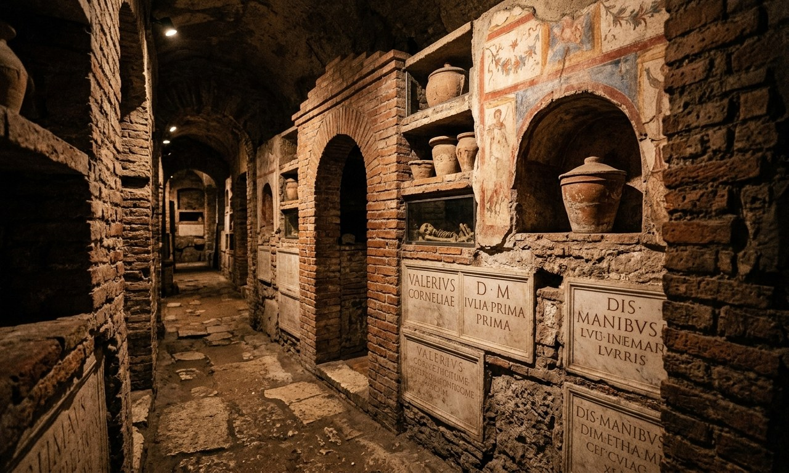

Vatican Necropolis and Scavi Tour

The Vatican Necropolis, known as the Scavi, is an ancient Roman cemetery buried about 5 to 12 metres beneath St. Peter's Basilica, and it holds the tomb of St. Peter himself. It is not the same as the Vatican Grottoes, the papal tombs just under the church floor. The real Vatican Scavi is a restricted archaeological site: the official tour is run only by the Vatican Excavations Office (Ufficio Scavi), costs about €20, lasts around 90 minutes in groups of about 12, and must be booked months ahead. You can also book a guided tour that bundles the Scavi with St. Peter's Basilica and the dome.
A Vatican Necropolis tour takes you to one of the most remarkable places in Rome, the hidden Roman cemetery under St. Peter's Basilica where the Apostle Peter is buried.
Because it sits below an active archaeological site, access is tightly controlled, which is why so many visitors are confused about how to book and about what they are actually seeing.
This guide clears that up. You will learn what the Vatican Necropolis is, how it differs from the Vatican Grottoes, how to get the official Scavi tickets, and which guided tours include the real Scavi rather than just the papal tombs.
📋 In This Guide
🎟 Top Vatican Tickets & Tours
What is the Vatican Necropolis (Scavi)
The Vatican Necropolis is a 1st-century Roman burial ground that lies deep under St. Peter's Basilica. The Italian word for the excavations is "Scavi," which is why the visit is called the Scavi tour.
It was uncovered during digs ordered under Pope Pius XII in the 1940s, and it runs along what was once a street of family mausoleums on Vatican Hill.
The heart of the site is the tomb of St. Peter. Archaeologists traced the layers under the basilica down to a simple grave by a wall painted red, the Red Wall, with ancient graffiti that marks it as the Apostle's resting place.
Standing a few metres from St. Peter's tomb in the Vatican Necropolis, directly below the high altar far above, is what makes this one of the most moving visits in Rome.
Because it is a live archaeological site with fragile conditions, the necropolis Vatican authorities protect it carefully, and only a small number of people are allowed in each day.
Vatican Necropolis and Scavi Tour Tickets
Here are the three different types of tours with prices. Only the first one includes the actual Vatican Necropolis. The other two are excellent basilica, papal tombs, and dome tours, but they stay in the Grottoes, not the Scavi.
| Tour | Price | Dome | Papal Tombs (Grottoes) | Scavi (Necropolis) |
|---|---|---|---|---|
| Scavi Tour + St. Peter's Tomb & Dome | €188 | Yes | Yes | Yes |
| Basilica, La Pietà, Papal Tombs & Dome | €90 | Yes | Yes | No |
| Basilica, Papal Tombs & Dome (group tiers) | €54 / €85 / €399 | Yes | Yes | No |
Vatican Scavi Tour: St. Peter's Tomb, Necropolis and Dome
The only option here that enter the real Vatican Necropolis, with a specialist guide.
- This tour runs for about 1.5 to 4 hours depending on pace and the dome climb
- Restricted entry permit and an archaeological guide for the underground Scavi, the pre-Constantinian Roman necropolis on Level -2, ending at St. Peter's tomb and the Red Wall
- A guided walk of St. Peter's Basilica, with La Pietà and the main nave, plus reserved access up the dome
- This is non-refundable, because the Excavations Office permits are issued in your name and locked to the date.
- The Scavi group is capped at 10 to 12 people under Vatican rules.
- Meet at Largo del Colonnato 5, where the guide escorts you to the Ufficio Scavi gate on Via Paolo VI
- Prices: Adult (18+ years): €188, Youth (11 - 17 years): €178
- Children below 11 years are not permitted
St. Peter's Basilica, La Pietà, Papal Tombs and Dome
A full basilica and dome tour with the papal tombs, but not the Scavi.
- A guided walk of St. Peter's Basilica covering La Pietà and Bernini's Baldachin, a guided visit to the Papal Tombs in the Vatican Grottoes (Level -1), and dome entry with the lift to the first level then stairs to the top for 360-degree views
- There will be an official guide with you and audio headsets will be provided
- This tour takes about 1.5 to 2.5 hours and is available in English, Spanish, French, German, or Italian
- Free cancellation up to 24 hours before.
- Meet at St. Peter's Square, Largo del Colonnato
- This tour visits the Grottoes, not the deep Vatican Necropolis
- Price: Adult (18+ years): €90, Children under 18 years: €80
St. Peter's Basilica, Papal Tombs and Dome: Group, Semi-Private or Private
The same basilica, papal tombs, and dome itinerary, with a group size to suit you.
- This tour takes about 1 hour 45 minutes to 2.5 hours and is available in English, Spanish, French, German, or Italian
- A professional licensed guide, a full basilica tour, a guided walk of the underground Papal Grottoes, dome entry with the panoramic balcony, and radio headsets
- Meet at Largo del Colonnato 5, and bring ID matching the booking. The dome is 320 narrow stairs, or the lift plus stairs
- Free cancellation up to 24 hours before the day of your visit
- Like the tour above, this covers the Grottoes, not the Scavi
- Prices: €54 small group, €85 semi-private, and €399 for a private tour
Which Tour to Choose
It comes down to one question: do you want the real Vatican Necropolis, or the basilica and papal tombs?
- For the actual Scavi and St. Peter's tomb, the €188 Scavi tour is the one, since it is the only option here that enters Level -2. Book it well ahead, as the permits are limited and non-refundable.
- For the basilica, La Pietà, the papal tombs, and the dome without the Scavi, the €90 tour is a strong all-rounder.
- For a smaller or private group on that same basilica and dome itinerary, the group-tier tour at €54 to €399 lets you pick the setting.
- On the tightest budget, remember the official Ufficio Scavi ticket is about €20 if you can book months ahead.
Vatican Necropolis vs the Vatican Grottoes
This is the single most common mix-up, so it is worth being clear, because it decides which ticket you actually need.
- The Vatican Grottoes (Level -1). Just below the basilica floor, these are the papal tombs, where popes including recent ones are buried. They are easy to visit, included on many standard basilica tours, and do not need a special permit.
- The Vatican Necropolis, or Scavi (Level -2). One level deeper, this is the ancient Roman cemetery with St. Peter's tomb. It is a restricted site that needs a special booking and has strict daily limits.
So a tour that lists "Papal Tombs" or "Vatican Grottoes" is not the Scavi. Only a tour that clearly names the Scavi or the Vatican Necropolis takes you down to St. Peter's tomb.
How to Book the Official Scavi Tour
The genuine Vatican Scavi tour is run only by the Vatican Excavations Office, the Ufficio Scavi, not by the regular ticket desks. If you want the cheapest, direct route, this is it, but it takes planning.
- Where to book: Through the official Excavations Office, by email request with your names, preferred language, and a range of possible dates.
- Price: Around €20, which includes the specialist guide.
- How far ahead: Months in advance. Only a few hundred people are admitted per day in small groups, so Vatican Necropolis tickets sell out fast.
- Group and length: About 12 people per group, split by language, for roughly 90 minutes.
- Age limit: The Scavi is not suitable for young children and has a minimum age, so check the current rule when you book.
If those dates are gone, or you would rather have the Scavi arranged for you along with the basilica and the dome, a guided tour is the other way in.
St. Peter's Tomb and What You See
On the Scavi tour you walk along the buried Roman street, past family mausoleums still bearing mosaics and inscriptions, descending through the layers of history under the basilica.
The route builds towards the Red Wall and the humble grave identified as St. Peter's tomb, with the bone fragments the Vatican associates with the Apostle.
Above it all, you can picture the line that runs straight up: St. Peter's tomb, the papal altar, and Michelangelo's dome, all stacked on the same point.
On the basilica tours, you instead see the Grottoes with the modern papal tombs, Michelangelo's La Pietà, and Bernini's Baldachin, before climbing the dome for the view over the city. You can read more in our St. Peter's Basilica tickets guide.
Dress Code, Rules, and Tips
The necropolis is a sacred, fragile site, and the rules are strict.
- Dress code is enforced. Shoulders and knees must be covered, with long trousers or a knee-length skirt. See the Vatican dress code guide.
- No photography is allowed inside the Scavi, and large bags must be left in the cloakroom.
- Bring ID. The Scavi permit is in your name, so carry the passport or ID that matches it.
- It is tight and humid. The passages are narrow, warm, and humid, so anyone with claustrophobia should think carefully before booking.
- Arrive early. Get to the meeting point 10 to 15 minutes before your time, and remember security applies to the basilica as usual.
Frequently Asked Questions
Can you visit the Vatican Necropolis?
Yes, you can visit the Vatican Necropolis but access is limited. It can be visited on a small guided tour, either booked directly with the Vatican Excavations Office or through a guided tour that includes the Scavi permit. Numbers are limited each day, so book early.
How do I get Vatican Necropolis tickets?
The official Scavi tickets are requested from the Vatican Excavations Office months ahead, for about €20. If those are sold out, a guided Vatican Necropolis Scavi tour that bundles the permit with the basilica and dome is the alternative.
Is the Scavi the same as the Vatican Grottoes?
No. The Grottoes are the papal tombs just under the basilica floor and are easy to visit. The Scavi, or Vatican Necropolis, is a level deeper and holds St. Peter's tomb, and it needs a special booking.
Where is St. Peter's tomb?
St. Peter's tomb is in the Vatican Necropolis, directly beneath the high altar of St. Peter's Basilica. You reach it only on the Scavi tour.
How long is the Scavi tour?
The Scavi portion is about 90 minutes. A guided tour that adds the basilica and dome can run from about 1.5 to 4 hours in total.
Is there an age limit for the Vatican Scavi tour?
Yes, the Scavi has a minimum age and is not suitable for young children, so check the current rule when you book. It is also narrow and humid, which does not suit everyone.
Related Vatican Visitor Guides